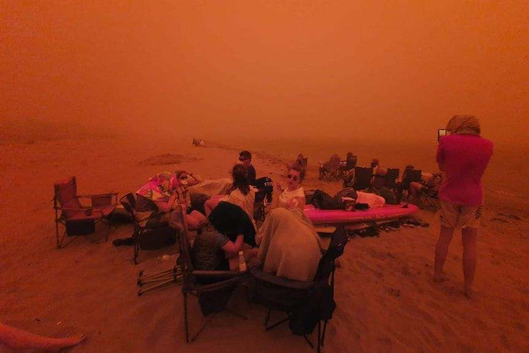

Batemans Bay is a regional town known for its natural beauty and is located only a four hours drive from Sydney and 2 hours drive from Canberra (VisitNSW, 2020).
During the 2019/2020 summer bushfire season, the town was under threat from a large firefront. The map to the left by the NSW Rural Fire Service (2019) shows the extent of the area burnt with the town located in the direct path of the fires.
Fortunately the town and communities remained relatively untouched by the fires, however the surrounding landscapes and national parks were heavily affected (Burnside, 2020).
The town was under the looming threat of the fires with the picture below showing dismayed residents sheltering on the beach.
Figure 2. Residents taking shelter on the beach (Casben, 2020).
Figure 1. Area of burnt land and predicted firespread.
The video below captured scenes in the town with the firefront heading towards the urban area. The sky was full of smoke, causing the sky to have an orange hue.
Batemans Bay a few hours ago, emergency still going. Homes have been lost. #clydemountainfire #nswbushfires #abc7pmnswnews pic.twitter.com/ONnNZDKMeO
— Liv Casben (@livcasben) December 31, 2019
Video 1. A video (Casben, 2020) showing how the fires have affected the sky and area around Batemans Bay.
[ Home ] [ Batemans Bay Fires ] [ Corryong Fires ] [ Mallacoota Fires ] [ MODIS ] [ Weather Information ] [ References ]